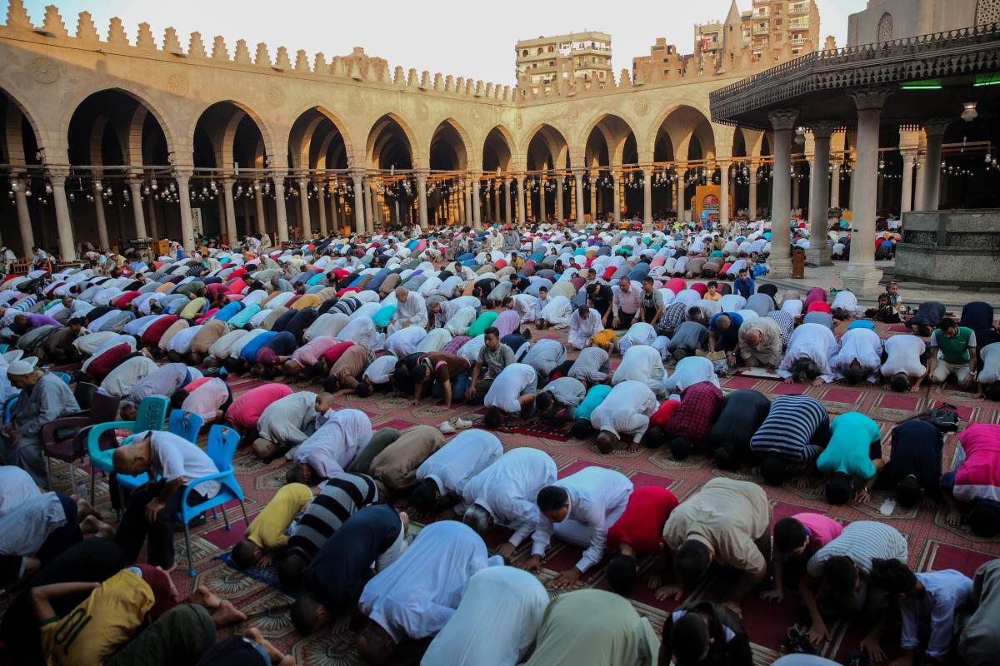
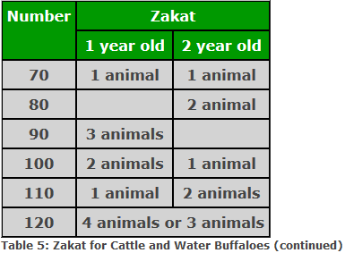
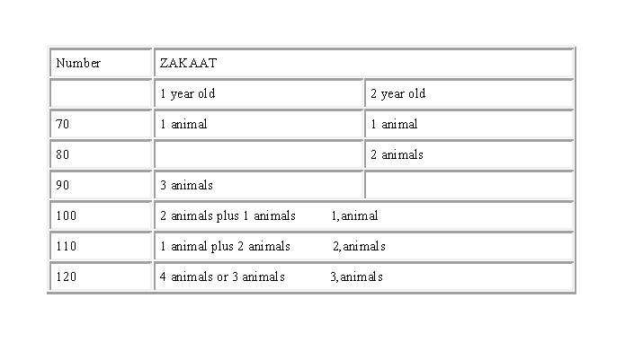

The Five Pillars of Islam (arkān al-Islām أركان الإسلام; also arkān ad-dīn أركان الدين "pillars of the religion") are fundamental practices in Islam, considered to be obligatory acts of worship for all Muslims.
They are summarized in the hadith of Gabriel.[1][2][3][4] The Sunni and Shia agree on the basic details of the performance and practice of these acts,[2][5][6] but the Shia do not refer to them by the same name (see Ancillaries of the Faith, for the Twelvers, and Seven pillars of Ismailism). They are: Muslim creed, prayer, charity to the poor, fasting in the month of Ramadan, and the pilgrimage to Mecca for those who are able.[7][8]
The Shahada (Arabic: الشَّهَادَةُ aš-šahādatu; Arabic pronunciation: [aʃʃahaːdatʊ], "the testimony"),[note 1] also transliterated as Shahadah, is an Islamic oath and creed, and one of the Five Pillars of Islam and part of the Adhan.
It reads: "I bear witness that there is no deity but God, and I bear witness that Muhammad is the Messenger of God."
The Shahada declares belief in the oneness (tawhid) of God and the acceptance of Muhammad as God's messenger. Some Shias also include a statement of belief in the wilayat of Ali.
[1] A single honest recitation of the Shahada is all that is required for a person to become a Muslim according to most traditional schools.[2]
"Salat" redirects here. For other uses, see Salat (disambiguation). Part of a series on Islam Beliefs Practices Profession of FaithPrayer AlmsgivingFastingPilgrimage TextsFoundations History Culture and society Related topics Islam portal vte Part of a series on Aqidah Silhouette of a mosque Sunni Shi'a Muhakkima Other variants Including: 1 Hanbali schoolZahiri school 2 Maliki schoolShafi'i school 3 Hanafi school 4 Usuli school, Akhbari schoolShaykhi school 5 AlawiAlevi 6 NizariMustaali (Dawoodi Bohra, Sulaymani BohraAlavi Bohra) 7 Various Ṭarīqah Islam portal vte Salah Muslims performing ruku' (bowing) during salah at a mosque Official name صَلَاة Also called Prayer in Islam Observed by Muslims Type Islamic Significance Muslim prayer offered to Allah according to legal jurisprudence Observances Daily prayers Friday prayer Duha Eid prayers Tarawih Rain prayer Kusuf and Khusuf prayers Related to Tilawa, ruku, sujud Salah,[a] also known as namaz,[b] is a form of worship performed by Muslims. Facing the direction of prayer, it is performed standing, bowing, and sitting in various stages, during which phrases from the Quran are typically recited. Salah is composed of prescribed repetitive cycles of bows and prostrations, called raka'at (sing. rak'a). The number of raka'at vary from prayer to prayer. Ritual purity and wudu' are prerequisites for performing the prayers.[1][2][3] Salah can be performed either in solitude, or collectively (known as jama'a). Worshippers performing jama'a line up in parallel rows behind a leader, known as the imam. Special prayers are exclusively performed in congregation; such prayers include the Friday prayer and the Eid prayers, and may be coupled with two sermons each, delivered by the Imam.[1] The daily obligatory prayers collectively form the second of the five pillars in Islam, observed three[4][5] or (most commonly) five times every day at prescribed times. These are usually Fajr (observed at dawn), Zuhr (observed at noon), Asr (observed late in the afternoon), Maghrib (observed after sunset), and Isha (observed at dusk). Etymology Ṣalāh ([sˤɑˈlæːh] صلاة) is an Arabic word that means to pray.[6] The word is used primarily by English speakers only to refer to the five obligatory prayers of Islam. This term is spelled as solat in Malaysia, Brunei and Indonesia, salaad in Somalia, and swalah in Tanzania and by other Swahili speakers. The origin of the word salah is debated, particularly in relation to Quranism. Some have suggested that salah derives from the root و ص ل (w-ṣ-l) which means "linking things together",[7] hence why the obligatory prayers in Islam are referred to by the word salah (in the sense that through prayer one "connects" to Allah). In some translations, namely that of Rashad Khalifa, salah is translated as the "Contact Prayer"[8] either because of the physical contact the head makes with the ground during the prostration part of the ritual (sujud), or again because the prayer "connects" the one who performs it to Allah. Other sources claim that the root is in fact ص ل و (s-l-w) the ultimate meaning of which is not agreed upon.[9] Namaz Namāz (Persian: نماز) is the Persian name of salah, originating from ancient Middle Persian language meaning "reverence". It is the term presently used in Turkey and other Turkic-language nations such as Kazakhstan (Kazakh: Намаз), in Bosnia, in Iran, Afghanistan, Tajikistan and other Persianate languages of the Indian subcontinent such as Urdu (Hindi: नमाज़) and Bengali (Bengali: নামাজ).[10] In the Quran The noun ṣalāh (صلاة) is used 83 times in the Quran.[11][12] There are about 15 other derivatives of the semitic root ṣ-l.[11] Words connected to sala (such as mosque, wudu, dhikr, etc.) are used in approximately one-sixth of Quranic verses.[13] "Surely my prayer, and my sacrifice and my life and my death are (all) for Allah",[14][c] and "I am Allah, there is none worthy of worship except but Allah, therefore serve Me and keep up prayer for My remembrance"[15][d] are both examples of this. Religious significance Main article: Prayer compensation The prayer room in Khonakhan Mosque, Uzbekistan The primary purpose of salah is to act as a person's communication with Allah.[16] Purification of the heart is the ultimate religious objective of salah. Via salah, a believer can grow closer to Allah and in turn strengthen their faith; it is believed that the soul requires prayer and closeness to Allah to stay sustained and healthy, and that prayer spiritually sustains the human soul.[17] Tafsir (exegesis) of the Quran can give four reasons for the observation of salah. First, in order to commend God, Allah's servants, together with the angels, do salah ("blessing, salutations").[18][e] Second, salah is done involuntarily by all beings in creation, in the sense that they are always in contact with Allah by virtue of him creating and sustaining them.[19][f] Third, Muslims voluntarily offer salah to reveal that it is the particular form of worship that belongs to the prophets.[g] Fourth, salah is described as the second pillar of Islam.[6] Procedure Main article: Rakat Various prescribed movements in salah, which collectively constitute a rak'ah. From left to right: rukū', qiyām/i'tidal, sujūd, takbīr and qu'ūd/julūs. Each salah is made up of repeating units known as rakat (Arabic: رَكَعَات, sing. rak'ah). Each prayer may consist of two to four rakat. Each rak'ah consists of specific movements and recitations. On the major elements there is consensus, but on minor details there may be different views. Between each position there is a very slight pause. The phrase Allahu akbar (takbir), is recited when moving from one position to another, except from rukū' to qiyām. Beginning Before prayer, a Muslim should always perform wudu, an act in which the hands are first washed, the mouth and nose are cleaned, the face is cleaned, the arms up to the elbow are washed, and the head is wiped over with wet hands, including the ears, before finally the feet are washed. Intention, known as niyyah, is a prerequisite for salah, and what distinguishes worship from 'going through the motions'. Some authorities hold that intention suffices in the heart, and some require that it be spoken, usually under the breath.[20] The person praying begins in a standing position known as qiyam, although people who find it difficult to do so may begin while sitting or lying on the ground.[6] This is followed by the raising of the hands to the head and recitation of the takbīr, known in combination as takbīrat al-iḥrām or takbīrat at-taḥrīmah (consecratory takbīr). Takbīr is read as Allaahu Akbar (lit. 'Allah is The Greatest'). One then lowers one's hands. The first takbīr represents the beginning of prayer. From this point forward one praying may not converse, eat, or do things that are otherwise halal. A Muslim must keep their vision low during prayer, looking at the place where their face will contact the ground during prostration.[20][21][22] Common elements of each rakat See also: Sitting in salah Men standing in prayer (qiyam position) in Painan, Indonesia Still standing, the next principal act is the recitation of Al-Fatiha, the first chapter of the Quran. This chapter begins with praise of Allah and then a supplication is made to God. In the first and second rakat, another Surah (Verse) of the Quran is recited following the Fatiha. This is followed by saying Allaahu Akbar and raising the hands up to the ear lobes (rafah yadain) followed by rakooh (bowing from the waist), with palms placed on the knees (depending on the madhhab, rules may differ for women). While bowing, those praying generally utter words of praise under their breath, such as سبحان ربي العظيم (lit. 'Glory be to my Lord, the Most Magnificent'), thrice or more. As the worshipper straightens their back, they say سمع الله لمن حمده (lit. 'Allah hears the one who praises him') and ربنا لك الحمد (rabbanā laka l-ḥamd, "Our Lord, all praise be to you.")[20] Yemeni Muslim in sujūd, performing salah in the desert during the North Yemen Civil War This is followed by saying Allaahu Akbar and raising the hands up to the ear lobes, before the worshipper kneels and prostrates with the forehead, nose, knees, palms and toes touching the floor, saying سبحان ربى الأعلى (lit. 'Glory be to my Lord, the Most High'). After a short while in prostration, the worshipper very briefly rises to sit, then returns to the ground a second time. Lifting the head from the second prostration completes a rak'ah. If this is the second or last raka'ah, the worshiper proceeds to sit and recite the tashahhud, salawat and other prayers.[20] Many schools hold that the right index finger is raised when reciting the salawat,[20] particularly the Sunni school scholars who adapted the technical practice of prayer found in the hadith of Zubayr ibn al-Awwam, as transmitted by Muslim ibn al-Hajjaj. In the final phase of az-Zubayr's practice, the middle, ring, and pinky fingers on the right hand are clasped, while the index finger is pointed and the thumb placed above the clasped middle finger.[Notes 1] This practice of az-Zubayr's became a basis principle by modern scholars such as Muhammad ibn Abd al-Wahhab in his book, Adab al-Mashy Ila as-Salaa,[24] and Muhammad Nasiruddin al-Albani.[25] If the worshipper then intends to finish their prayer, they perform the taslim, or continue with a new rak'ah. Mistakes in salah are believed to be compensated for by prostrating twice at the end of the prayer, known as sujud sahwi.[26] The taslim is read as Assalamualaikum wa rahmatullah (lit. 'Peace and mercy of Allah be upon you All'). Taslim represents the end of prayer. Taslim Taslim is the last portion of a Muslim prayer (salat). Every salat ends with the recital of Taslim. Taslim (تسليم) is the concluding portion of the salah, where one recites السلام عليكم ورحمة الله As-salāmu ʿalaikum wa-raḥmatu-llah ("Peace and blessings of God be unto you") and in Sunni Islam, once while facing the right, and once while facing the left.[27][28] Performing the Taslim Reciting the salam facing the right direction Reciting the salam facing the left direction Types of salah Salah is classified into categories based on degrees of obligation. One common classification is fard ('obligatory'), sunna ('recommended'), and nafl ('voluntary').[29] Obligatory prayers Display showing salah times in a Turkish mosque The five daily prayers are considered by many to be obligatory on every Muslim who has reached the age of 10, with the exception of those for whom it may not be possible due to physical or mental disabilities,[30] and those experiencing hayd ('menstruation') or nifas ('postnatal bleeding').[31] Those who are sick or otherwise physically unable to offer their prayers in the traditional form are permitted to offer their prayers while sitting or lying, as they are able.[32] Each of the five prayers has a prescribed time, depending on the position of the sun. These are the Fajr prayer (two cycles observed at dawn), Zuhr prayer (four cycles observed just after noon), Asr prayer (four cycles observed in the late afternoon), Maghrib prayer (three cycles observed after sunset), and the Isha' prayer (four cycles observed in the evening). Salah must be prayed in its prescribed time, but in certain circumstances, one may be unable to do so; in this case, it must be offered as soon as possible. In several hadith, the Islamic prophet Muhammad stated a person who slept past the prescribed time or forgot to offer it must pray it as soon as they remember; however, knowingly sleeping through the prescribed time for salah is deemed impermissible.[33] Qasr The practice of shortening salah is referred to as qasr. When traveling, one may shorten the noon, afternoon, and evening prayers from four to two cycles.[34] Jam' According to the Ja'fari school of Shi'ism, one may perform jam' bayn al-salatayn ('combining between two prayers'), which refers to praying the Zuhr and Asr or Maghrib and Isha' prayers in combination at one of their times; however, neither qasr nor jam' bayn al-salatayn can be applied to the Fajr prayer.[35] Barring the Hanafi school, the schools of jurisprudence in Sunni Islam permit one to combine these prayers as well if they traveling or incapable of independently performing the prayers. Among Sunnis, Hanbalis and Salafis also allow the combining of two consecutive prayers for a wide range of reasons, such as when various needs arise or due to any difficulty.[36][37] Some Salafis ascribing to the Ahl-i Hadith movement also permit combining generally without any need, although praying separately is preferred, similarly to the Ja'fari school.[38][39] Sunni view Of the fard category are the five daily prayers, as well as the Friday prayer. Some schools also consider the Eid prayer and Witr prayer to be wajib or fard, although others consider them to be in the sunna category.[40] Abandoning the obligatory prayers due to negligence is Kufr (disbelief) according to the stricter Hanbali madhhab of Sunni Islam, while the other Sunni madhhabs consider doing so a major sin. However, all four madhhabs agree that denial of the mandatory status of these prayers invalidates the faith of those who do so, rendering them apostates. The Islamic prophet Muhammad is reported to have said: "Between man and polytheism and unbelief is the abandonment of salat." (Sahih Muslim Book 1, hadith 154).[41] Fard prayers (as with all fard actions) are further classed as either fard al-ayn (obligation of the self) and fard al-kifayah (obligation of sufficiency).[citation needed] Fard al-Ayn are actions considered obligatory on individuals, for which the individual will be held to account if the actions are neglected.[42] Fard al-Kifayah are actions considered obligatory on the Muslim community at large, so that if some people within the community carry it out no Muslim is considered blameworthy, but if no one carries it out, all incur a collective punishment.[43] Followers of Imam Abu Hanifa also include a 6th obligatory prayer, witr. It is supposed to be the last prayer of the night and is composed of an odd number of rakat. This obligation is considered a lesser obligation to the other 5 obligatory prayers, in that its rejection is not an act of disbelief according to the Hanafi school. The other schools consider this to be a Sunnah muakkadah (emphasized sunnah). Some Islamic scholars require men to offer the mandatory salat in congregation (jama'ah), behind an imam when they are able however, according to most Islamic scholars, prayer in congregation is mustahabb (recommended) for men, if they are able to do so.[44] Special congregational prayers Main article: Friday prayer Women praying in Najaf, Iraq on Eid al-Fitr The Jumu'ah is a congregational prayer on Friday, which replaces the Zuhr prayer. It is compulsory upon men to pray this in congregation, while women may pray it so or offer Zuhr prayer instead.[45] Jumu'ah consists of a sermon (khutbah), after which two rakats are prayed.[46] Since the khutbah replaces the two rakat of Zuhr, it is believed that listening to it carefully compensates the thawāb of 2 rakat.[47] The salah of the 'Idayn is said on the mornings of ''Eid al-Fitr and 'Eid an-nahr. The Eid prayer is classified by some as fard, likely an individual obligation (fard al-ayn) though some Islamic scholars argue it is only a collective obligation (fard al-kifayah). It consists of two rakats, with seven (or three for the followers Imam Abu Hanifa) takbirs offered before the start of the first rakat and five (or three for the followers of Imam Abu Hanifa) before the second. After the salah is completed, a sermon (khutbah) is offered. However, the khutbah is not an integral part of the Eid salah.[48] The Eid salah must be offered between sunrise and true noon i.e. between the time periods for Fajr and Zuhr.[34] Supererogatory prayers Main article: Supererogatory prayers Sunnah and nafl Sunni Muslims perform optional sunnah salah (voluntary prayers offered by Muhammad) of two categories: sunnah mu'akkadah (verified sunnah) and sunnah ghair-mu'akkadah (unverified sunnah). The primary difference between the two being the frequency of Muhammad having performed the relevant salah. Certain sunnah prayers have prescribed times. Those ordained for before each of the fard prayers must be offered between the first call to prayer (adhan) and the second call (iqamah), which signifies the start of the fard prayer. Those sunnah ordained for after the fard prayers can be said any time between the end of the fard prayers and the end of the current prayer's waqt.[citation needed] While Sunni Muslims classify these prayers as sunnah, Shia consider them nafl. Nafl salah are voluntary and can be offered at any time.[49] Many Sunni Muslims also offer two rakats of nafl salah after the Zuhr and Maghrib prayers. During the Isha prayer, they pray the two rakats of nafl after the two sunnah mu'akkadah and wajib prayers.[50] There are many specific conditions or situations when one may wish to offer nafl prayers. They cannot be offered at sunrise, true noon, or sunset. The prohibition against salah at these times is to prevent the practice of sun worship.[51] Some Muslims offer voluntary prayers immediately before and after the five prescribed prayers. A table of these prayers is given below. Table of supererogatory prayers with compulsory prayers, with minor differences between madhhabs[50] Compulsory (fard) prayer Voluntary before fard[t 1] Obligatory Voluntary after fard[t 1] Total Sunni Shia Sunni Shia Sunni Shia Sunni Shia Fajr 2 rakat¤ 2 rakat[t 1] 2 rakat[t 1] None 2 rakat[t 1] 4 r. 6 r. Zuhr 4 rakat¤ 4 rakat 4 rakat[t 2] 2 rakat¤[t 3] 8 r.[t 1][t 4][t 5] 10 r. 16 r. Asr 4 rakat‡ 4 rakat 4 rakat None 8 r.[t 1][t 4][t 5] 8 r. 16 r. Maghrib 2 rakat 3 rakat 3 rakat 2 rakat¤[t 3] 2 r.[t 1][t 4][t 5] 7 r. 11 r. Isha[t 6] 4 rakat‡ 4 rakat 4 rakat 2 rakat¤[t 3] 2 r.[t 1][t 4][t 5] 10 r. 10 r. Jumu'ah 2 rakat‡ 2 rakat 2 rakat with khutbah 4 rakat¤ 2 rakat¤ 2 r. nafl 2 rakat 14 r. 6 r. ¤: denotes sunnah mu'akkadah (verified sunnah), which must be offered by adherents of the Hanafi madhhab. ‡: denotes sunnah ghair-mu'akkadah (unverified sunnah). Prayer times in Islam Prayers of the night Though not a mandatory part of the course, most Muslims supplicate after completing salah. Tahajjud (Arabic: تَهَجُّد) are supererogatory prayers offered late at night. Prayers of this kind are observed from midnight to the prescribed time of the Fajr prayer.[52] The prayer includes any number of even rakat, performed in twos or fours, followed by three or more odd rakat of witr prayer.[53] Shia Muslims offer similar prayers, simply called nightly prayers (Arabic: صَلَوَات اللَّيل). These are considered highly meritorious, and can be offered in the same time as tahajjud.[54][55] These prayers include eleven rakat: 8 nafl (4 prayers of 2 rakat each), 2 rakat shaf' prayer and 1 rakat witr.[55] Witr (Arabic: وِتر lit. 'string') are prayers offered either with the Isha prayer or with the tahajjud/salawat al-layl. Some consider this prayer compulsory (wajib), while others consider it supererogatory. These are performed in odd numbers of rakats, with slight differences between madhhabs. The prayer usually includes the qunūt.[54] Other prayers The word istikharah is derived from the root ḵ-y-r (خير) "well-being, goodness, choice, selection".[56] Salat al-Istikhaarah is a prayer offered when a Muslim needs guidance on a particular matter. To say this salah one should pray two rakats of non-obligatory salah to completion. After completion one should request Allah that which on is better.[34] The intention for the salah should be in one's heart to pray two rakats of salah followed by Istikhaarah. The salah can be offered at any of the times where salah is not forbidden.[57] Other prayers include the tahiyyat al-masjid, which Muslims are encouraged to offer these two rakat.[58] Differences in practice A Sunni Muslim (left)[59] and Shia Muslim (right) performing the Friday prayer in Tehran. Some Sunnis perform salah with the hands clasped ("qabd"), while Shia offer salah with their hands at their sides ("sadl"). Muslims believe that Muhammad practiced, taught, and disseminated the worship ritual in the whole community of Muslims and made it part of their life. The practice has, therefore, been concurrently and perpetually practiced by the community in each of the generations. The authority for the basic forms of the salah is neither the hadiths nor the Quran, but rather the consensus of Muslims.[60][61] This is not inconsistent with another fact that Muslims have shown diversity in their practice since the earliest days of practice, so the salah practiced by one Muslim may differ from another's in minor details. In some cases the hadith suggest some of this diversity of practice was known of and approved by Muhammad himself.[62] Most differences arise because of different interpretations of the Islamic legal sources by the different schools of law (madhhabs) in Sunni Islam, and by different legal traditions within Shia Islam. In the case of ritual worship these differences are generally minor, and should rarely cause dispute.[63] A turbah or mohr is a small piece of soil or clay, often a clay tablet, used during salah to symbolize earth. Common differences, which may vary between schools and gender, include the position of legs, feet, hands and fingers, where the eyes should focus, the minimum amount of recitation, the volume of recitation (audible, moving of lips, or just listening (Loud prayer [ar], Silent prayer [ar])), and which of the principal elements of the prayer are indispensable, versus recommended or optional.[citation needed] A 2015 Pew Research Center study found that women are 2% more likely than men to pray on a daily basis.[64] Prayer in congregation Main article: Salah al jama'ah Bosniaks praying in an open field, c. 1906 Women performing the Friday prayer at a mosque, Ohio, US Friday prayer for Muslims in the streets of Dhaka, Bangladesh Prayer in the congregation (jama'ah) is considered to have more social and spiritual benefits than praying by oneself.[65] As per hadith traditions, the reward of a prayer in congregation increases twenty-five times. A hadith says: "The prayer in congregation is twenty five times superior to the prayer offered by person alone." (Sahih Bukhari 646).[66] When praying in congregation, the people stand in straight parallel rows behind one person who conducts the prayer, called imam, also called the "leader". The imam must be above the rest in knowledge, action, piety, and justness and possess faith and commitment the people trust, Balanced Perception of Religion and the best knowledge of the Quran.[33] The prayer is offered as normal, with the congregation following the imam in order as he/she offers the salah.[67] Standing arrangement For two people of the same gender, they would stand in line, the imam would stand on the left, and the other person is on the right. For more than two people, the imam stands one row ahead of the rest.[citation needed] When the worshippers consist of men and women combined, a man is chosen as the imam. In this situation, women are typically forbidden from assuming this role. This point, though unanimously agreed on by the major schools of Islam, is disputed by some groups, based partly on a hadith whose interpretation is controversial. When the congregation consists entirely of women and pre-pubescent children, one woman is chosen as imam.[68] When men, women, and children are praying, the children's rows are usually between the men's and women's rows, with the men at the front and women at the back. Another configuration is where the men's and women's rows are side by side, separated by a curtain or other barrier,[69] with the primary intention being for there to be no direct line of sight between male and female Worshippers.[70] Professed benefits According to the Qur'an, salah prevents fahisha and forbidden acts:[71] Recite that which has been revealed to you of the Book and keep up prayer; surely prayer keeps (one) away from indecency and evil, and certainly the remembrance of Allah is the greatest, and Allah knows what you do. — Quran 29:45 See also Dua Sabr (Islamic term) Tasbih References Footnotes Arabic: صَلَاة, romanized: ṣalāh, IPA: [sˤa.laːh]; pl. صَلَوَات, ṣalawāt, [sˤa.la.waːt] Persian: نماز, romanized: namâz, IPA: [na.ˈmɑːz]; pl. نمازها, namâz-hâ, [na.ˈmɑːz.ˈhɑː] Quran, 6:162 Quran, 20:14 Quran, 33:43 Quran, 24:41 Quran, 21:71-73 The author also noted these particular movements used by az-Zubayr were also practiced by Abdullah ibn Umar in Sahih Muslim number 1339[23] Notes According to Shia Muslims, these are to be said in two and two rakats (four in total). This is not the case for Sunni Muslims. Replaced by Jumu'ah on Fridays, which consists of two rakats. According to Sunni Muslims, there is a difference between Sunnat-Mu'akkadah (obligatory) and Sunnat-Ghair-Mu'akkadah (voluntary). Unlike for the Sunnat-Ghair-Mu'akkadah, the Sunnat-Mu'akkadah was prayed by Muhammed daily. Mustahab (praiseworthy) to do every day. (Shias) According to Shia Muslims, this prayer is termed nawafil. Further information on the usage of the word "Isha" (evening) see Quran 12:16, Quran 79:46 Citations "salat | Definition & Facts". Encyclopedia Britannica. Retrieved 4 January 2016. The Oxford Dictionary of Islam. "Salat". oxfordislamicstudies. Archived from the original on 1 September 2009. Farrakhan, M.R.; Arefian, A.; Jahromi, G.S. (2016). "A Reanalysis of Social - Cultural Impacts and Functions of Worship: A Case Study on Salah (Namaz)". Mediterranean Journal of Social Sciences. doi:10.5901/mjss.2016.v7n4S1p249. Na, Abdullahi Ahmed An-Na'im; Naʻīm, ʻabd Allāh Aḥmad (30 June 2009). Islam and the Secular State. ISBN 9780674033764. Edward E. Curtis IV (1 October 2009). Muslims in America: A Short History. Oxford University Press. ISBN 978-0-19-974567-8. Chittick, William C.; Murata, Sachiko (1994). The vision of Islam. Paragon House. ISBN 9781557785169. "و ص ل", Wiktionary, 8 April 2022, retrieved 12 May 2022 "Quran The Final Testament, translated by Rashad Khalifa, Ph.D." www.masjidtucson.org. Retrieved 12 May 2022. "صلاة", Wiktionary, 27 April 2022, retrieved 12 May 2022 "British Library". Dukes, Kais, ed. (2009–2017). "Quran Dictionary". Quranic Arabic Corpus. Retrieved 26 October 2019. Gerrans, S., "The Quran: A Complete Revelation", 2016 "how many times is salat repeated in Quran?". Fars news. Retrieved 17 December 2012. Muhammad, Farooq-i-Azam Malik (2008). What is Islam Who are the Muslims?. Institute of Islamic Knowledge (2008). ISBN 978-0981943909. Makarem Shirazi, Subhani, Ayatullah Naser, Ayatullah Jafar (10 December 2012). "Philosophy of Islamic Laws". Islamic Seminary Publications. Sheihul Mufliheen (October 2012). Holy Quran's Judgement. XLIBRIS. p. 57. ISBN 978-1479724550. Elias, Abu Amina (25 June 2015). "The purpose of prayer in Islam | Faith in Allah الإيمان بالله". Retrieved 17 November 2019. BIN SAAD, ADEL (January 2016). A COMPREHENSIVE DESCRIPTION OF THE PROPHET'S WAY OF PRAYER: صفة صلاة النبي. ISBN 978-2745167804. From Surah al-Mu’minun (23) to Surah al-Furqan (25) verse 20 (24 January 2014). "An Enlightening Commentary into the Light of the Holy Qur'an vol. 11". Imam Ali Foundation. Haddad, Yvonne Yazbeck; Smith, Jane I. (1 January 2014). The Oxford Handbook of American Islam. Oxford University Press. p. 162. ISBN 9780199862634. Ciaravino, Helene (2001). How to Pray: Tapping into the Power of Divine Communication. Square One Publishers (2001). p. 137. ISBN 9780757000126. Al-Tusi, Muhammad Ibn Hasan (2008). Concise Description of Islamic Law and Legal Opinions. Islamic College for Advanced Studie; UK ed. edition (1 October 2008). pp. 57–59. ISBN 978-1904063292. Nur Baits (2021, p. 248 Hadith Riwayat Muslim 1336) Abd al-Wahhab (2019, p. 197) al-Albani (2004, p. 108) "The Prostration of Forgetfulness : Shaikh 'Abdullaah bin Saalih Al-'Ubaylaan". AbdurRahman.Org. Translated by Abu Maryam. Archived from the original on 26 June 2014. Retrieved 28 June 2014. Du'a before Taslim (Sunni View) About the Taslim "Understanding Salat" Archived 28 August 2009 at the Wayback Machine from Albalagh Elshabrawy , Hassanein, Elsayed, Ahmad (3 February 2015). Inclusion, Disability and Culture (Studies in Inclusive Education). Sense Publishers (28 November 2014). pp. 3–6. ISBN 978-9462099227. GhaneaBassiri, Kambiz (1997). Competing Visions of Islam in the United States: A Study of Los Angeles. Praeger (30 July 1997). ISBN 9780313299513. Turner, Colin (19 December 2013). Islam: The Basics. Routledge; 2nd edition (24 May 2011). pp. 106–108. ISBN 978-0415584920. Qara'ati, Muhsin (5 January 2017). "The Radiance of the Secrets of Prayer". Ahlul Bayt World Assembly. Buyukcelebi, Ismail (2005). Living in the Shade of Islam. Tughra (1 March 2005). ISBN 978-1932099867. Sharaf al-Din al-Musawi, Sayyid Abd al-Husayn (18 October 2012). "Combining The Two Prayers". Hydery Canada Ltd. "Combining two prayers". Islamweb.net. 16 January 2018. Archived from the original on 12 November 2020. Nasir al-Din al-Albani, Muhammad (10 September 2014). "A resident may combine prayers to avoid difficulties – Shaykh al Albaani". Abdurrahman.org. Archived from the original on 3 February 2017. Silmi, Shaykh Yahya. "THE WEAKNESS ABOUT THE NARRATION "COMBINING THE PRAYER WITHOUT REASON IS A MAJOR SIN" AND AN ADVICE TO BROTHER ABU KHADEEJA ABDUL WAHID". Uthman Ibn Affan Library. Archived from the original on 9 April 2021. Abu Hibban; Abu Khuzaimah Ansari (15 July 2015). "When To Combine And Shorten Prayers". Salafi Research Institute. Archived from the original on 24 November 2020. Schade, Johannes (2006). Encyclopedia of World Religions. Mars Media/Foreign Media (9 January 2007). ISBN 978-1601360007. "Sahih Muslim 82b - The Book of Faith - كتاب الإيمان - Sunnah.com - Sayings and Teachings of Prophet Muhammad (صلى الله عليه و سلم)". sunnah.com. Retrieved 26 September 2021. The Oxford Dictionary of Islam. "Fard al-Ayn". oxfordislamicstudies. Archived from the original on 18 August 2010. The Oxford Dictionary of Islam. "Fard al-Kifayah". oxfordislamicstudies. Archived from the original on 14 June 2010. "Rules of Salat (Part III of III)". Al-Islam.org. Archived from the original on 10 May 2012. Retrieved 12 May 2012. Fahd Salem Bahammam. The Muslim's Prayer. Modern Guide. ISBN 9781909322950. Retrieved 29 January 2018. Akhtar Rizvi, Sayyid Saeed (1989). Elements of Islamic Studies. Bilal Muslim Mission of Tanzania. Margoliouth, G. (2003). "Sabbath (Muhammadan)". In Hastings, James (ed.). Encyclopedia of Religion and Ethics. Vol. 20. Selbie, John A., contrib. Kessinger Publishing. pp. 893–894. ISBN 978-0-7661-3698-4. "Islam Today". Archived from the original on 17 October 2007. "prayers". islamicsupremecouncil.com. Archived from the original on 13 February 2012. Retrieved 14 May 2012. "A Shi'ite Encyclopedia". Ahlul Bayt Digital Islamic Library Project. 12 November 2013. Ringwald, Christopher D (20 November 2008). A Day Apart: How Jews, Christians, and Muslims Find Faith, Freedom, and Joy on the Sabbath. Oxford University Press (8 January 2007). pp. 117–119. ISBN 978-0195165364. Muhammad Ali, Maulana. Religion of Islam. Ahmadiyya Anjuman Ishaat; Sixth Revised edition (June 1989). ISBN 978-0913321324. Islam International Publications (January 2016). Salat: The Muslim prayer book. Islam International Publishers (1997). ISBN 978-1853725463. Majlisi, Muhammad Baqir (18 November 2021). "Salat al-Layl". Al-Fath Al-Mubin Publications. Kassamali, Kassamali, Tahera , Hasnain (9 January 2013). "Salatul Layl". Tayyiba Publishers & Distributors. Nieuwkerk, Karin van (October 2013). Performing Piety: Singers and Actors in Egypt's Islamic Revival. University of Texas Press; Reprint edition (1 October 2013). ISBN 9780292745865. Iṣlāhī, Muḥammad Yūsuf (1989). "Etiquettes of Life in Islam". Firdaus Mediapro, Jannah (17 October 2019). The Path to Islamic Prayer English Edition Standard Version. Blurb (18 October 2019). ISBN 978-1714100736. "Sunan Abi Dawud 759 - Prayer (Kitab Al-Salat) - كتاب الصلاة - Sunnah.com - Sayings and Teachings of Prophet Muhammad (صلى الله عليه و سلم)". sunnah.com. Retrieved 12 March 2021. "Al-Mawrid". al-mawrid.org. Archived from the original on 24 July 2011. "Mishkat al-Masabih 981 - Prayer - كتاب الصلاة - Sunnah.com - Sayings and Teachings of Prophet Muhammad (صلى الله عليه و سلم)". sunnah.com. Retrieved 19 April 2021. Muhammad al-Bukhari. "Sahih al-Bukhari, Book of military expeditions". Retrieved 17 October 2019. Abdal Hakim Murad. "Understanding the Four Madhhabs". Archived from the original on 29 March 2010. Retrieved 25 May 2010. Swanson, Ana (30 March 2016). "Why women are more religious than men". The Washington Post. Archived from the original on 31 March 2016. Retrieved 8 January 2018. Qara ati, Muhsin (18 February 2018). The Radiance of the Secrets of Prayer. ISBN 978-1496053961. "Sahih al-Bukhari 646 - Call to Prayers (Adhaan) - كتاب الأذان - Sunnah.com - Sayings and Teachings of Prophet Muhammad (صلى الله عليه و سلم)". sunnah.com. Retrieved 26 September 2021. Hussain, Musharraf (10 October 2012). The Five Pillars of Islam: Laying the Foundations of Divine Love and Service to Humanity. Kube Publishing Ltd (10 October 2012). pp. 77–78. ISBN 978-1847740540. "Iranian women to lead prayers". BBC. 1 August 2000. Retrieved 11 February 2008. Cornell, Vincent J. (2007). Voices of Islam: Voices of life : family, home, and society. Praeger Publishers; 1st edition (1 January 2007). pp. 25–28. ISBN 978-0275987350. Maghniyyah, Muhammad Jawad (21 November 2016). "Prayer (Salat), According to the Five Islamic Schools of Law". Islamic Culture and Relations Organisation. Yılmaz, Hakkı. WHAT IS SALAH?. Hakkı Yılmaz. pp. 40, 41. Retrieved 9 July 2023. Bibliography Abd al-Wahhab, Muhammad ibn (2019). Syarah Adab Berjalan Menuju Shalat [Manners of Walking to the Prayer]. Darul Falah. p. 197. ISBN 9789793036892. Retrieved 22 November 2021. al-Albani, Muhammad Nasiruddin (2004). Fikih Syekh Albani (in Indonesian). Translated by Mahmud bin Ahmad Rasyid ·. Pustaka Azzam. Retrieved 21 November 2021. Nur Baits, Ammi (2021). Tafsir Shalat. Muamalah Publishing. p. 248 Hadith Riwayat Muslim 1336. Retrieved 20 November 2021. Further reading Smith, Jane I.; Haddad, Yvonne Yazbeck (1993). The Oxford Handbook of American Islam (1st ed.). Oxford: Oxford University Press. pp. 162–163. External links Learn how to Pray Salah Islamic Prayer Times: 11 Things You Need to Know How to Perform Salah Muslim Prayer Times: Calculating Prayer Times in Islam The Importance of Salah in Islam Wikimedia Commons has media related to Salat. vte Salah (Islamic prayer) vte Islam topics vte People and things in the Quran Authority control databases Edit this at Wikidata Categories: Islamic terminologySalahPrayer
Zakat[a][3] is a form of almsgiving, often collected by the Muslim Ummah.[1] It is considered in Islam as a religious obligation,[4][5] and by Quranic ranking, is next after prayer (salat) in importance.[6] Eight heads of zakat are mentioned in the Quran. As one of the Five Pillars of Islam, zakat is a religious duty for all Muslims who meet the necessary criteria of wealth to help the needy.[7][8] It is a mandatory charitable contribution, often considered to be a tax.[9][10] The payment and disputes on zakat have played a major role in the history of Islam, notably during the Ridda wars.[11][12][page needed] Zakat on wealth is based on the value of all of one's possessions.[13][14] It is customarily 2.5% (or 1⁄40)[15] of a Muslim's total savings and wealth above a minimum amount known as nisab each lunar year,[16] but Islamic scholars differ on how much nisab is and other aspects of zakat.[16] According to Islamic doctrine, the collected amount should be paid to the poor and the needy, Zakat collectors, orphans, widows, those to be freed from slavery, the aged who cannot work to feed themselves, those in debt, in the cause of God and to benefit the stranded traveller. Today, in most Muslim-majority countries, zakat contributions are voluntary, while in Libya, Malaysia, Pakistan, Saudi Arabia, Sudan and Yemen, zakat is mandated and collected by the state (as of 2015).[17][18] Shias, unlike Sunnis, have traditionally regarded zakat as a private action, and they give zakat to imam-sponsored rather than state-sponsored collectors, but it is also obligatory for them.[19][20][21] Etymology It came from Arabic root z-k-w (ز ك و), meaning to purify.[22][1] Zakat is considered a way to purify one's income and wealth from sometimes worldly, impure ways of acquisition.[1][23][24][25] According to Sachiko Murata and William Chittick, "Just as ablutions purify the body and salat purifies the soul (in Islam), so zakat purifies possessions and makes them pleasing to God."[26][27] Doctrine Quran The Quran discusses charity in many verses, some of which relate to zakat. The word zakat, with the meaning used in Islam now, is found, for example, in suras: 7:156, 9:60, 19:31, 19:55, 21:73, 23:4, 27:3, 30:39, 31:4, and 41:7.[28][29] Zakat is found in the early Medinan suras and described as obligatory for Muslims.[27] It is given for the sake of salvation. Muslims believe those who give zakat can expect reward from God in the afterlife, while neglecting to give zakat can result in damnation. Zakat is considered part of the covenant between God and a Muslim.[27] Verse 2:177 (the Clear Qur'an translation) sums up the Quranic view of charity and almsgiving (another name for zakat is the poor due): Righteousness is not in turning your faces towards the east or the west. Rather, the righteous are those who believe in Allah, the Last Day, the angels, the Books, and the prophets; who give charity out of their cherished wealth to relatives, orphans, the poor, ˹needy˺ travellers, beggars, and for freeing captives; who establish prayer, pay alms-tax, and keep the pledges they make; and who are patient in times of suffering, adversity, and in ˹the heat of˺ battle. It is they who are true ˹in faith˺, and it is they who are mindful ˹of Allah˺. – 2:177 According to Yusuf al-Qaradawi, verse 9.5 of the Quran makes zakat one of three prerequisites for pagans to become Muslims: "but if they repent, establish prayers, and practice zakat they are your brethren in faith".[7] The Quran also lists who should receive the benefits of zakat, discussed in more detail below.[30] Hadith Each of the most trusted hadith collections in Islam have a book dedicated to zakat. Sahih Bukhari's Book 24,[31][32] Sahih Muslim's Book 12,[33][34] and Sunan Abu-Dawud's Book 9[35][36] discuss various aspects of zakat, including who must pay, how much, when and what. The 2.5% rate is also mentioned in the hadiths.[37] The hadiths admonish those who do not give the zakat. According to the hadith, refusal to pay or mockery of those who pay zakat is a sign of hypocrisy, and God will not accept the prayers of such people.[38][39] The sunna also describes God's punishment for those who refuse or fail to pay zakat.[40] On the day of Judgment, those who did not give the zakat will be held accountable and punished.[30] The hadith contain advice on the state-authorized collection of the zakat. The collectors are required not to take more than what is due, and those who are paying the zakat are asked not to evade payment. The hadith also warn of punishment for those who take zakat when they are not eligible to receive it (see Distribution below).[30] Amount Main article: Calculation of Zakāt The amount of zakat to be paid by an individual depends on the amount of money and the type of assets the individual possesses. The Quran does not provide specific guidelines on which types of wealth are taxable under the zakat, nor does it specify percentages to be given. However, it clearly indicates to donate the "surplus" of one's income. But the customary practice in the Islamic world has been that the amount of zakat paid on capital assets (e.g. money) is 2.5% (1⁄40).[41] Zakat is additionally payable on agricultural goods, precious metals, minerals, and livestock at a rate varying between 2.5% and 20% (1/5), depending on the type of goods.[42][43] Zakat is usually payable on assets continuously owned over one lunar year that are in excess of the nisab, a minimum monetary value.[44] However, Islamic scholars have disagreed on this issue. For example, Abu Hanifa did not regard the nisab limit to be a pre-requisite for zakat, in the case of land crops, fruits and minerals.[45] Other differences between Islamic scholars on zakat and nisab are acknowledged as follows by Yusuf al-Qaradawi,[16] Unlike prayers, we observe that even the ratio, the exemption, the kinds of wealth that are zakatable are subject to differences among scholars. Such differences have serious implications for Muslims at large when it comes to their application of the Islamic obligation of zakat. For example, some scholars consider the wealth of children and insane individuals zakatable, others don't. Some scholars consider all agricultural products zakatable, others restrict zakat to specific kinds only. Some consider debts zakatable, others don't. Similar differences exist for business assets and women's jewelry. Some require certain minimum (nisab) for zakatability, some don't. etc. The same kind of differences also exist about the disbursement of zakat. – Shiekh Mahmud Shaltut[16] Failure to pay A slot for giving zakat at the Zaouia Moulay Idriss II in Fez, Morocco[46] The consequence of failure to pay zakat has been a subject of extensive legal debate in traditional Islamic jurisprudence, particularly when a Muslim is willing to pay zakat but refuses to pay it to a certain group or the state.[47][48] According to classical jurists, if the collector is unjust in the collection of zakat but just in its distribution, the concealment of property from him is allowed.[47] If, on the other hand, the collector is just in the collection but unjust in the distribution, the concealment of property from him is an obligation (wajib).[47] Furthermore, if the zakat is concealed from a just collector because the property owner wanted to pay his zakat to the poor himself, they held that he should not be punished for it.[47] If collection of zakat by force was not possible, use of military force to extract it was seen as justified, as was done by Abu Bakr during the Ridda Wars, on the argument that refusing to submit to just orders is a form of treason.[47] However, Abu Hanifa, the founder of the Hanafi school, disapproved of fighting when the property owners undertake to distribute the zakat to the poor themselves.[47] Some classical jurists held the view that any Muslim who consciously refuses to pay zakat is an apostate, since the failure to believe that it is a religious duty (fard) is a form of unbelief (kufr), and should be killed.[49][50][51] However, prevailing opinion among classical jurists prescribed sanctions such as fines, imprisonment or corporal punishment.[47] Some classical and contemporary scholars such as Ishaq Ibn Rahwayh and Yusuf al-Qaradawi have stated that the person who fails to pay Zakat should have the payment taken from them, along with half of his wealth.[52] Additionally, those who failed to pay the zakat would face God's punishment in the afterlife on the day of Judgment.[30] In modern states where zakat payment is compulsory, failure to pay is regulated by state law similarly to tax evasion.[citation needed] Distribution According to the Quran's Surah Al-Tawba, there are eight categories of people (asnaf) who qualify to benefit from zakat funds.[53] Alms-tax is only for the poor and the needy, for those employed to administer it, for those whose hearts are attracted ˹to the faith˺, for ˹freeing˺ slaves, for those in debt, for Allah's cause, and for ˹needy˺ travellers. ˹This is˺ an obligation from Allah. And Allah is All-Knowing, All-Wise. — Surah At-Tawbah 9:60 Islamic scholars have traditionally interpreted this verse as identifying the following eight categories of Muslim causes to be the proper recipients of zakat:[54][55] Those living without means of livelihood (Al-Fuqarā'),[54] the poor[55] Those who cannot meet their basic needs (Al-Masākīn),[54] the needy[55] To zakat collectors (Al-Āmilīyn 'Alihā)[54][55] To persuade those sympathetic to or expected to convert to Islam (Al-Mu'allafatu Qulūbuhum),[54] recent converts to Islam,[53][55][56] and potential allies in the cause of Islam[55][57] To free from slavery or servitude (Fir-Riqāb),[54] slaves of Muslims who have or intend to free from their master[clarification needed] by means of a kitabah contract[55][57] Those who have incurred overwhelming debts while attempting to satisfy their basic needs (Al-Ghārimīn),[54] debtors who in pursuit of a worthy goal incurred a debt[55] Those fighting for a religious cause or a cause of God (Fī Sabīlillāh),[54] or for Jihad in the way of Allah by means of pen, word, or sword,[58] or for Islamic warriors who fight against the unbelievers but are not salaried soldiers.[55][57][59]: h8.17 Wayfarers, stranded travellers (Ibnu Al-Sabīl),[54] travellers who are traveling with a worthy goal but cannot reach their destination without financial assistance[55][57] Zakat should not be given to one's own parents, grandparents, children, grandchildren, spouses or the descendants of Muhammad.[60] Neither the Quran nor the Hadiths specify the relative division of zakat into the above eight categories.[61] According to the Reliance of the Traveller, the Shafi'i school requires zakat is to be distributed equally among the eight categories of recipients, while the Hanafi school permits zakat to be distributed to all the categories, some of them, or just one of them.[59]: h8.7 Classical schools of Islamic law, including Shafi'i, are unanimous that collectors of zakat are to be paid first, with the balance to be distributed equally amongst the remaining seven categories of recipients, even in cases where one group's need is more demanding.[citation needed] Muslim scholars disagree whether zakat recipients can include non-Muslims. Islamic scholarship, historically, has taught that only Muslims can be recipients of zakat.[62] In recent times, some state that zakat may be paid to non-Muslims after the needs of Muslims have been met, finding nothing in the Quran or sunna to indicate that zakat should be paid to Muslims only.[60] Additionally, the zakat funds may be spent on the administration of a centralized zakat collection system.[41] Representatives of the Salafi movement include propagation of Islam and any struggle in righteous cause among permissible ways of spending, while others argue that zakat funds should be spent on social welfare and economic development projects, or science and technology education.[60] Some hold spending them for defense to be permissible if a Muslim country is under attack.[60] Also, it is forbidden to disburse zakat funds into investments instead of being given to one of the above eight categories of recipients.[63] Role in society The zakat is considered by Muslims to be an act of piety through which one expresses concern for the well-being of fellow Muslims,[56] as well as preserving social harmony between the wealthy and the poor.[64] Zakat promotes a more equitable redistribution of wealth and fosters a sense of solidarity amongst members of the Ummah.[65] Historical practice Taxation in the Ottoman Empire Taxes Adet-i AğnamAdet-i deştbaniAsharAvarızBac-i pazarBedl-i askeriCizyeCürm-ü cinayetDamga resmiGümrük resmiHaraçIhtisabIspendjeIstiraMaktuMururiye resmiMuskirat resmiNüzülOtlak resmiRav akçesiResm-i arusaneResm-i bennâkResm-i bostanResm-i çiftResm-i dönümResm-i filoriResm-i ganemResm-i hınzırResm-i mücerredResm-i sicillRusum-e-eflakSelamet isniTapu resmiTekalif-i orfiyeTemettuTuz resmiZakat Implementation AhidnâmeDefterEminEvkaf-i Hümayun NezaretiHazine-i HassaHazine-i AmireHaneIltizamIstiraKadıKanun-i RayaKanunnameMalikâneMerdibanMilletMuafiyetMuhassilMuqata'ahMütesellimOttoman Public Debt AdministrationRegie CompanySiyakatSürsatTahrirTanzimatWaqf vte Zakat, an Islamic practice initiated by the Islamic prophet Muhammad, was first collected on the first day of Muharram.[66] It has played an important role throughout its history.[67] Schact suggests that the idea of zakat may have entered Islam from Judaism, with roots in the Hebrew and Aramaic word zakut.[27][68] However, some Islamic scholars[68] disagree that the Qur'anic verses on zakat (or zakah) have roots in Judaism.[69] The caliph Abu Bakr, believed by Sunni Muslims to be Muhammad's successor, was the first to institute a statutory zakat system.[70] Abu Bakr established the principle that the zakat must be paid to the legitimate representative of Muhammad's authority (i.e. himself).[67] Other Muslims disagreed and refused to pay zakat to Abu Bakr, leading to accusations of apostasy and, ultimately, the Ridda wars.[11][67][71] The second and third caliphs, Umar ibn al-Khattab and Uthman ibn Affan, continued Abu Bakr's codification of the zakat.[67] Uthman also modified the zakat collection protocol by decreeing that only "apparent" wealth was taxable, which had the effect of limiting zakat to mostly being paid on agricultural land and produce.[72] During the reign of Ali ibn Abu Talib, the issue of zakat was tied to legitimacy of his government. After Ali, his supporters refused to pay zakat to Muawiyah I, as they did not recognize his legitimacy.[67] The practice of Islamic state-administered zakat was short-lived in Medina. During the reign of Umar bin Abdul Aziz (717–720 CE), it is reported that no one in Medina needed the zakat. After him, zakat came more to be considered as an individual responsibility.[67] This view changed over Islamic history. Sunni Muslims and rulers, for example, considered collection and disbursement of zakat as one of the functions of an Islamic state; this view has continued in modern Islamic countries.[73] Zakat is one of the five pillars of Islam, and in various Islamic polities of the past was expected to be paid by all practising Muslims who have the financial means (nisab).[74] In addition to their zakat obligations, Muslims were encouraged to make voluntary contributions (sadaqat).[75] The zakat was not collected from non-Muslims, although they were required to pay the jizyah tax.[76][77] Depending on the region, the dominant portion of zakat went typically to Amil (the zakat collectors) or Sabīlillāh (those fighting for religious cause, the caretaker of local mosque, or those working in the cause of God such as proselytizing non-Muslims to convert to Islam).[61][78] Contemporary practice According to the researcher Russell Powell in 2010, zakat was mandatory by state law in Libya, Malaysia, Pakistan, Saudi Arabia, Sudan, and Yemen. There were government-run voluntary zakat contribution programs in Bahrain, Bangladesh, Egypt, Indonesia, Iran, Jordan, Kuwait, Lebanon, Maldives and the United Arab Emirates.[79] In a 2019 study conducted by the Institute for Social Policy and Understanding that examined philanthropy for American Muslims in comparison to other faith and non-faith groups, it was found that for American Muslims, Zakat was an important driver of charitable giving. This results in American Muslims being the most likely faith group studied to be motivated to donate based on a believed religious obligation (zakat), and a "feeling that those with more should help those with less", referencing again the concept and religious imperative behind Zakat.[80] Zakat status in Muslim countries Country Status Afghanistan Voluntary Algeria Voluntary Azerbaijan Voluntary Bahrain Regulated by the state, but contributions are voluntary Bangladesh Regulated by the state, but contributions are voluntary Burkina Faso Voluntary Chad Voluntary Egypt Regulated by the state, but contributions are voluntary Guinea Voluntary Indonesia Regulated by the state, but contributions are voluntary Iran Regulated by the state, but contributions are voluntary Iraq Voluntary Jordan Regulated by the state, but contributions are voluntary Kazakhstan Voluntary Kuwait Regulated by the state, but contributions are voluntary Lebanon Regulated by the state, but contributions are voluntary Libya Mandatory Malaysia Mandatory Maldives Regulated by the state, but contributions are voluntary Mali Voluntary Mauritania Voluntary Morocco Voluntary Niger Voluntary Nigeria Voluntary Oman Voluntary Pakistan Mandatory Qatar Voluntary Saudi Arabia Mandatory Senegal Voluntary Sierra Leone Voluntary Somalia Voluntary Sudan Mandatory Syria Voluntary Tajikistan Voluntary Gambia Voluntary Tunisia Voluntary Turkey Voluntary Turkmenistan Voluntary United Arab Emirates Regulated by the state, but contributions are voluntary Uzbekistan Voluntary Yemen Mandatory [79] Collection Zakat donation box at Taipei Grand Mosque in Taipei, Taiwan Today, in most Muslim countries, Zakat is at the discretion of Muslims over how and whether to pay, typically enforced by fear of God, peer pressure and an individual's personal feelings.[17] Among the Sunni Muslims, Zakat committees, linked to a religious cause or local mosque, collect zakat.[81] Among the Shia Muslims, deputies on behalf of Imams collect the zakat.[82] In six of the 47 Muslim-majority countries—Libya, Malaysia, Pakistan, Saudi Arabia, Sudan and Yemen—zakat is obligatory and collected by the state.[17][18][83][84] In Jordan, Bahrain, Kuwait, Lebanon, and Bangladesh, the zakat is regulated by the state, but contributions are voluntary.[85] The states where Zakat is compulsory differ in their definition of the base for zakat computation.[83] Zakat is generally levied on livestock (except in Pakistan) and agricultural produce, although the types of taxable livestock and produce differ from country to country.[83] Zakat is imposed on cash and precious metals in four countries with different methods of assessment.[83] Income is subject to zakat in Saudi Arabia and Malaysia, while only Sudan imposes zakat on "wealth that yields income".[83] In Pakistan, property is exempt from the zakat calculation basis, and the compulsory zakat is primarily collected from the agriculture sector.[78] Under compulsory systems of zakat tax collection, such as Malaysia and Pakistan, evasion is very common and the zakat (alms tax) is regressive.[17] A considerable number of Muslims accept their duty to pay zakat, but deny that the state has a right to levy it, and they may pay zakat voluntarily while evading official collection.[83] In discretion-based systems of collection, studies suggest zakat is collected from and paid only by a fraction of Muslim population who can pay.[17] In the United Kingdom, which has a Muslim minority, more than three out of ten Muslims gave to charity (Zakat being described as "the Muslim practice of charitable donations"), according to a 2013 poll of 4000 people.[86] According to the self-reported poll, British Muslims, on average, gave US$567 to charity in 2013, compared to $412 for Jews, $308 for Protestants, $272 for Catholics and $177 for atheists.[86] Distribution The primary sources of sharia also do not specify to whom the zakat should be paid – to zakat collectors claiming to represent one class of zakat beneficiary (for example, poor), collectors who were representing religious bodies, or collectors representing the Islamic state.[61][87] This has caused significant conflicts and allegations of zakat abuse within the Islamic community, both historically[61] and in modern times.[88] Fi Sabillillah is the most prominent asnaf in Southeast Asian Muslim societies, where it broadly construed to include funding missionary work, Quranic schools and anything else that serves the Islamic community (ummah) in general.[89] Role in society In 2012, Islamic financial analysts estimated annual zakat spending exceeded US$200 billion per year, which they estimated to be 15 times more than provided by the United Nations Office for the Coordination of Humanitarian Affairs.[90][91] Islamic scholars and development workers state that much of this zakat practice is mismanaged, wasted or ineffective.[90] About a quarter of the Muslim world[92] continues to live on $1.25 a day or less, according to the 2012 report.[90] A 1999 study of Sudan and Pakistan, where zakat is mandated by the state, estimated that zakat proceeds ranged between 0.3 and 0.5 percent of GDP, while a more recent report put zakat proceeds in Malaysia at 0.1% of GDP.[83] These numbers are far below what was expected when the governments of these countries tried to Islamize their economies, and the collected amount is too small to have a sizeable macroeconomic effect.[83] In a 2014 study,[93] Nasim Shirazi states widespread poverty persists in Islamic world despite zakat collections every year. Over 70% of the Muslim population in most Muslim countries is impoverished and lives on less than US$2 per day. In over 10 Muslim-majority countries, over 50% of the population lived on less than $1.25 per day income, states Shirazi.[93] Zakat has so far failed to relieve large scale absolute poverty among Muslims in most Muslim countries.[93] Related terms Zakat is required of Muslims only. For non-Muslims living in an Islamic state, sharia was historically seen as mandating jizya (poll tax).[94] Other forms of taxation on Muslims or non-Muslims, that have been used in Islamic history, include kharaj (land tax),[95] khums (tax on booty and loot seized from non-Muslims, sudden wealth),[96] ushur (tax at state border, sea port, and each city border on goods movement, customs),[97] kari (house tax)[98] and chari (sometimes called maara, pasture tax).[99][100] There are differences in the interpretation and scope of zakat and other related taxes in various sects of Islam. For example, khums is interpreted differently by Sunnis and Shi'ites, with Shia expected to pay one fifth of their excess income after expenses as khums, while Sunnis do not.[101] At least a tenth part of zakat and khums every year, among Shi'ites, after its collection by Imam and his religious deputies under its doctrine of niyaba, goes as income for its hierarchical system of Shia clergy.[82][102] Among Ismaili sub-sect of Shias, the mandatory taxes which includes zakat, is called dasond, and 20% of the collected amount is set aside as income for the Imams.[103] Some branches of Shia Islam treat the right to lead as Imam and right to receive 20% of collected zakat and other alms as a hereditary right of its clergy.[citation needed] Sadaqah is another related term for charity, usually construed as a discretionary counterpart to zakat.[104] Zakat al-Fitr Further information: Zakat al-Fitr Zakat al-Fitr or Sadaqat al-Fitr[105] is another, smaller charitable obligation, mandatory for all Muslims—male or female, minor or adult as long as he/she has the means to do so—that is traditionally paid at the end of the fasting in the Islamic holy month of Ramadan.[106][107] The collected amount is used to pay the zakat collectors and to the poor Muslims so that they may be provided with a means to celebrate 'Eid al-Fitr (the festival of breaking the fast) following Ramadan, along with the rest of the Muslims.[108] Zakat al-Fitr is a fixed amount assessed per person, while Zakat al mal is based on personal income and property.[107] According to one source, the Hidaya Foundation, the suggested Zakat al Fitr donation is based on the price of 1 Saa (approx. 3 kg) of rice or wheat at local costs, (as of 2015, approximately $7.00 in the U.S.).[105]
 